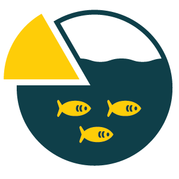

Intervention Area: Digital Twins of the Ocean
The concept approach of this Intervention Area is the development and validation of Digital Twins of the Ocean (DTOs) at sub-basin scale. It is a multidisciplinary, long-lasting research and innovation activity that focuses on the development of twin technology for spatially limited areas at sea-basin level. The activity aims to improve our understanding of the relations among essential systems at sea-basin level and ultimately support the development of AI based simulation and prediction capabilities for European oceans.

Background and rationale
The development of digital twins, including DTOs, offers realistic digital representations of assets, processes, or systems in the built or natural environment. DTOs enable users to provide answers to “what if” questions in the context of ocean development, a sustainable blue economy and effective maritime spatial planning. By combining large amount of data and information with data-driven models for relevant sea systems and their interdependency DTO applications will allow for user-driven scenario building of effects of natural processes and anthropogenic activities on the marine environment. This ability will enhance planning rapid responses to unexpected events at sea and provide innovative, interactive, and user-driven tools available to citizens, entrepreneurs, scientists, and policymakers.
The concept approach of this Intervention Area – the development and validation of DTOs at sub-basin scale – is a multidisciplinary, long-lasting research and innovation activity. The initial focus will be on some spatially limited areas at sea-basin level at low TRL to improve our understanding of the relations among the essential processes and system components of the marine environment. The aim is to develop holistic types of DTOs that include and model all essential systems and their interactions: circulation and currents, waves, tides, interaction with the atmosphere, but also seabed and sediments, coasts and estuaries, animal and plant life, the ecosystem, and socio-economic activities and impacts. DTO applications for scenarios should connect to the marine environment but also to blue economy activities at local level. The development of accurate, validated, holistic DTOs at sub-basin scale will include several phases, notably the selection of targeted sub-basins, the collection of relevant data for these areas, the development of data-driven AI models representing the essential processes that characterize these basins, and the evaluation of the mutual interactions among the systems. Further steps include the combination with existing physics-based models, the development of digital systems and new sensors, development of a data-lake for storage of constantly increasing and heterogeneous data (to feed the AI simulators), the development of the framework for computation of multidisciplinary equilibrium among the systems, and numerical solution via large High-Performance Computing (HPC) architectures. Finally, this DTO approach will require constant test and validation of models' predictions, as well as specialized tools for access, rapid analysis, and dynamic visualization of the data and the predicted solutions.
This Intervention Area is complementary to the European Digital Twin of the Ocean (European DTO) under the EU Mission Restore our Ocean and Waters and will complement key initiatives such as the EDITO library of models/ EMODnet and ILIAD. The activity is closely linked with the assessment and improvement the EU observing system under EOOS, and it will require deployment and coordination with ocean related ESFRI Research Infrastructures.
Key thematic areas
Actions under this Intervention Area will be dedicated to development of DTO models at sub-basin scale, i.e., spatially limited areas within sea-basins. This will provide accurate information on the limits and knowledge gaps of single/interconnected sub-modules (physical, biogeochemical, ecosystem, socio-economic) and details for integrating spatial hierarchical models. Activities should address the following aspects:
- Mapping and understanding user requirements for models, based on input from relevant communities (research, business, management), and turning this knowledge into applications based on stakeholder requirements.
- Identifying and assessing data gaps and available data and doing uncertainty quantification of the data and models relevant to selected use cases at a sub-sea-basin scale.
- New sensors and innovative approaches to fill identified data gaps to provide more and more accurate information on sub-systems.
- Understanding the essential systems characterizing one selected area and mapping the need for additional AI models where existing models do not apply.
- General frameworks for exchanging information between models.
A close scientific and expert cooperation and coordination is needed to ensure appropriate timing, complementarities, convergence, and interoperability with other ongoing and planned DTO initiatives, notably under the EU Mission “Restore our Ocean and Waters”, Horizon Europe actions (Cluster 6), national projects, and DTO core infrastructures.
Implementation, enablers, and synergies
In addition to cash calls for R&I proposals, there is good potential for in-kind contribution and engaging observing systems and national monitoring efforts to ensure harmonization of data collection and better coverage and frequency of measurements to improve the fundamental modelling.
Relevant SRIA enablers for achieving the targets include FAIR data; SSH integration and social innovation, considering the socioeconomic and coastal community aspects of area specific modelling; training activity that address human capacity needs; social innovation and rules for practical applications; sustainable financing of infrastructures.
Synergies will be sought with activities under Horizon Europe, including EU Mission actions, Copernicus, EOOS, UN Decade, Mercator, DITTO, ILIAD, and EMODnet, relevant RIs, and national projects and activities.
Outcomes and Impacts
- Examples of outcomes from R&I investment in this area: Sub-basin ODT; Intelligent environmental monitoring systems and new sensor technology; synergies between available data networks.
- Environmental impacts: Planning and adaptation strategies put in place to tackle environmental and climate change.
- Social impacts: better stakeholder engagement (incl. citizens), inter-institutional collaborations & investments.
- Economic impacts: Higher use of intelligent DSS by industry, municipalities and coastal communities, and potential for circular business models